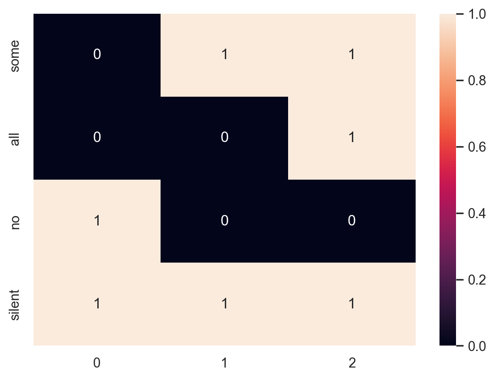
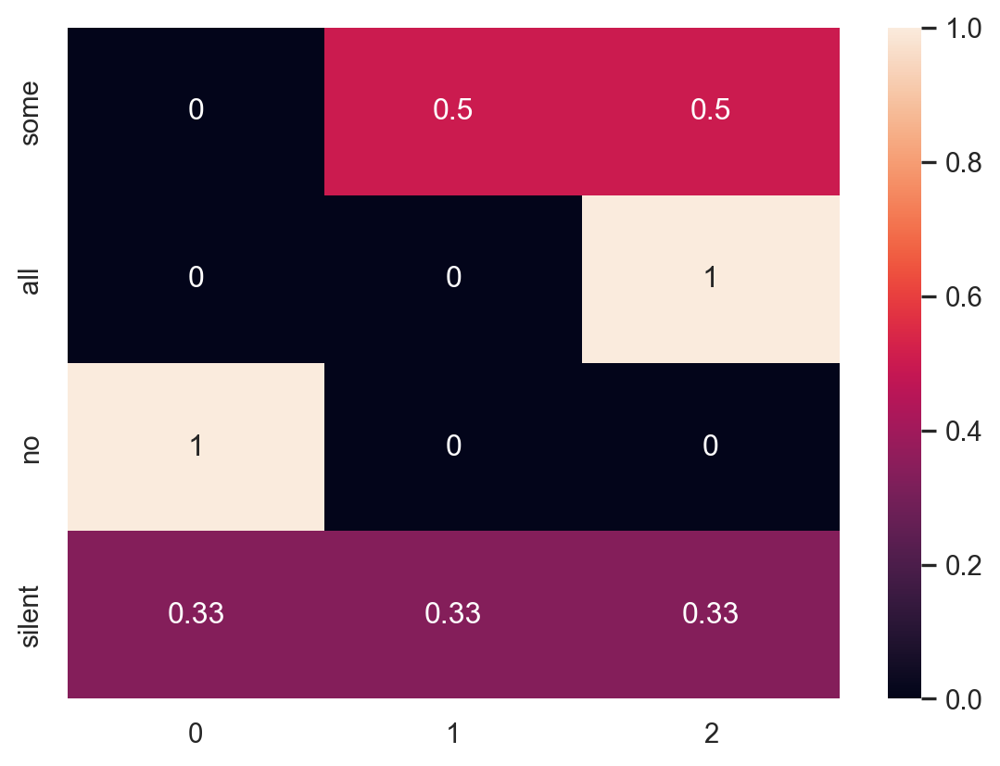
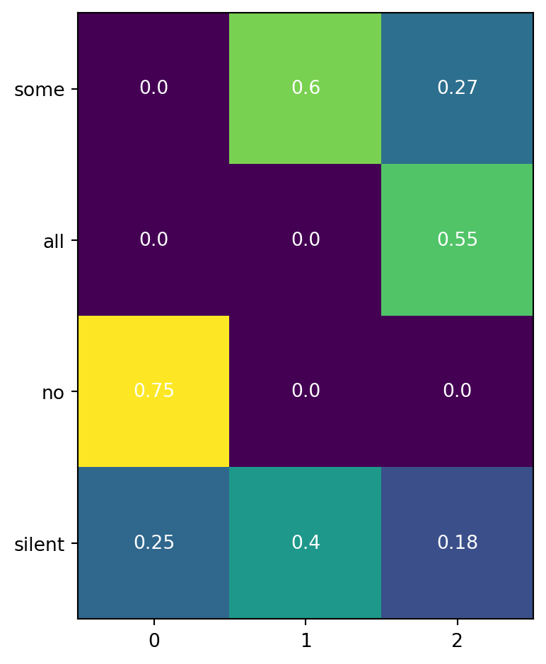

import numpy as np
import matplotlib.pyplot as plt
p = np.linspace(0.001,1,num=500)
fp = -np.log(p)
fig, ax = plt.subplots()
ax.plot(p, fp)
ax.set_xlabel("p")
ax.set_ylabel("surprisal")
plt.show()7 Language pragmatics
When we talk to each other, we often rely on shared assumptions and context to get our points across more quickly. Linguists call this pragmatics. For example, consider the following exchange:
A: I’m almost out of gas.
B: There’s a gas station up ahead.
Person A didn’t explicitly ask a question, but Person B understood that A wouldn’t have said anything at all if they didn’t need something or weren’t explaining something they were about to do, so B responded with an answer to the implied question (“Where can I get gas?”).
In this chapter, we’ll see how some aspects of pragmatics can be explained by combining Bayesian inference with two new ideas: information theory and decision theory (or expected utility).
7.1 Surprisal üòØ
We’ll focus on one concept from information theory: surprisal. Surprisal captures how unexpected an observation is. Intuitively, the unexpectedness of an observation should depend how probable it is. Namely, the more probable it is, the less unexpected it is.
We want a function \(f(p)\) that takes a probability and gives us its unexpectedness. Here are some reasonable constraints on \(f\):
- When an observation has probability 0, it is infinitely unexpected: \(f(0) = \infty\).
- When an observation has probability 1, it is not unexpected at all: \(f(1) = 0\).
- When we have two independent observations with probabilities \(p_1\) and \(p_2\), such that the probability of both occurring is \(p_1 \cdot p_2\), we want the total unexpectedness of observing both to be the sum of the unexpectedness of each observation: \(f(p_1 \cdot p_2) = f(p_1) + f(p_2)\).
A function that satisfies these constraints is:
\[ f(p) = -log(p) \] Let’s verify.
- \(-log(p) \rightarrow \infty\) as \(p \rightarrow 0\) ✅
- \(-log(1) = 0\) ✅
- \(-log(p_1 \cdot p_2) = -(log(p_1) + log(p_2)) = (-log(p_1))+(-log(p_2))\) ✅
Here’s a plot of this function:
What does surprisal have to do with language?
When you’re communicating with someone, surprisal can help you decide what information to give the other person. For example, imagine that you observe a number between 1 and 10 and you want to share it with someone else. You could either say:
I saw an even number.
Or you could say:
I saw two.
Which would you say? The second one, duh. But why?
In formal terms, you’re trying to send a signal such that the number you observed is not surprising for the other person after receiving your signal. That is, you’re trying to minimize the surprisal of \(P(2|\text{signal})\).
Exercise: Compute the surprisal of each of these two signals.
7.2 The Rational Speech Act model üç™
Let’s apply the concept of surprisal to the following example. There were initially two cookies in a cookie jar, you may have eaten some, and you’re telling your friend how many you had. You can say:
- “I had some cookies.” (You ate one or two.)
- “I had all the cookies.” (You ate two.)
- “I had no cookies.” (You ate none.)
- Nothing – stay silent. (You could have eaten none or any number of cookies.)
Let’s define this situation using a binary matrix. Each row is a signal (what you say) and each column is a state (how many cookies were eaten).
state_matrix = np.array([[0,1,1],
[0,0,1],
[1,0,0],
[1,1,1]])
signals = ["some", "all", "no", "silent"]
states = ["0","1","2"]We’ll define a function that prints out this matrix as a heat map.
def print_state_matrix(m, x_labels=None, y_labels=None):
fig, ax = plt.subplots()
im = ax.imshow(m)
if (x_labels and y_labels):
ax.set_xticks(np.arange(len(x_labels)), labels=x_labels)
ax.set_yticks(np.arange(len(y_labels)), labels=y_labels)
for i in range(len(y_labels)):
for j in range(len(x_labels)):
text = ax.text(j, i, round(m[i, j],2),
ha="center", va="center", color="w")
fig.tight_layout()
plt.show()
# Print out the matrix
print_state_matrix(state_matrix, states, signals)
Now let’s calculate how a literal listener would interpret each of these statements. Each row in the matrix above (one for each signal) will define a distribution over the states. That is, for for state \(h\) and signal \(d\), we want to compute:
\[ P_{\text{listener}}(h|d) \propto P(d|h) P(h) \]
The literal listener assumes that, given a state, a signal consistent with that state is chosen at random by the speaker. This is already captured in the matrix above: Signals consistent with a state have a value of 1 in their cells and signals inconsistent have a 0. We will also assume that the listener has a uniform prior over states. Therefore, we can calculate the literal listener’s probabilities by just normalizing the rows of the matrix.
We’ll do this more than once, so let’s write a function to do it.
def normalize_rows(m):
normalized_m = np.zeros((m.shape))
row_num = 0
for row in m:
normalized_m[row_num,:] = row / sum(row)
row_num += 1
return(normalized_m)literal_listener = normalize_rows(state_matrix)
print_state_matrix(literal_listener, states, signals)
Now let’s calculate the pragmatic speaker. The pragmatic speaker chooses a signal given a state. Therefore, this time, the columns of the matrix will be probability distributions.
Unlike the literal listener, the pragmatic speaker is trying to convey some information, so they will choose a signal with the greatest expected utility for the literal listener. Expected utility in this case is defined as the expected increase in understanding about the true state of the world. Remember, we already have a way of quantifying this: surprisal. So we’ll define utility as negative surprisal of the state given the signal from the point of view of the literal listener: \(-(-log(P_{\text{listener}}(h|d)))\).
# First we apply a softmax decision function
alpha = 1 # paramater controls how close to maximizing speaker is
pragmatic_speaker = np.exp(np.log(literal_listener)*alpha)
for col in range(pragmatic_speaker.shape[1]):
pragmatic_speaker[:,col] = (pragmatic_speaker[:,col] /
sum(pragmatic_speaker[:,col]))
print_state_matrix(pragmatic_speaker, states, signals)C:\Users\jern\AppData\Local\Temp\ipykernel_22432\3850398469.py:3: RuntimeWarning:
divide by zero encountered in log

In the above code, I used something known as a “softmax” rather than a true maximizing function. The exponential function captures the idea that the speaker will choose probabilistically, generally choosing options with more utility. This is a fairly common assumption in both psychology and economics because we often don’t have complete information when making decisions (or when modeling other people’s decisions), so assuming a pure maximizing function isn’t always the best choice.
However, I also included a parameter alpha that controls how close to maximizing the speaker is. The larger alpha is, the closer the speaker will get to maximizing utility.
Now we can calculate the probabilities for the pragmatic listener. This will be similar to the literal listener in that the pragmatic listener receives a signal and computes the probability of each state given a signal. The difference is that the pragmatic listener doesn’t assume the signals are chosen at random, but that the signals are chosen by the pragmatic speaker above.
We can compute the pragmatic listener by normalizing the matrix above along the rows.
pragmatic_listener = normalize_rows(pragmatic_speaker)
print_state_matrix(pragmatic_listener, states, signals)The pragmatic listener correctly infers a scalar implicature, a concept from pragmatics in linguistics. Even though “I had some cookies” is consistent with eating all of the cookies, a pragmatic listener will infer that if a person says they ate some then they did not eat all (otherwise they would have said so).
7.3 Does this model match human behavior? üîµ
In a word, yes. One of the first papers to look at this was by Michael Frank and Noah Goodman. They applied this model to the simple task of picking out a shape from a small set and tested the model’s predictions in a behavioral experiment.
7.3.1 The task
- The speaker: ‚ÄúImagine you are talking to someone and you want to refer to the middle object. What word would you use: blue or circle?‚Äù üü¶ üîµ üü©
- The listener: ‚ÄúImagine someone is talking to you and uses the word blue to refer to one of these objects. Which object are they talking about?‚Äù üü¶ üîµ üü©
In the task and experiment, the researchers varied the actual set of objects in a systematic way.
7.3.2 The model
Their model is virtually identical to the cookie jar model we just worked through. They assume that speakers try to choose words to maximize the listener’s utility, as measured by surprisal.
A literal listener in this case would assume that any object that is consistent with the speaker’s chosen word could have been the one they were referring to.
With these assumptions, the researchers derive the probability of the speaker choosing each word (details in the paper) as:
\[ P(w|r_s,C) = \frac{|w|^{-1}}{\sum_{w^\prime \in W} {|w^\prime|}^{-1}} \]
- \(w\): The speaker’s chosen word.
- \(r_s\): The object the speaker meant to refer to.
- \(C\): The set of objects.
- \(|w|\): The number of objects that \(w\) could apply to.
- \(W\): The set of words that apply to the object that the speaker meant to refer to.
Regarding \(W\), imagine that the speaker wanted to refer to the blue circle. In that case, \(W = \{ \text{blue}, \text{circle} \}\), because either word could apply to the object.
According to this model, speakers will tend to choose words that more uniquely identify an object in a set. For example, in the set above, because blue applies to two objects (blue square and blue circle), but circle only applies to one, circle will get higher probability.
7.3.3 Homework 4: Implement the model

I haven’t provided all the details for this model because your assignment is to finish the implementation yourself, run some simulations, and collect a small amount of real data to compare the model to.